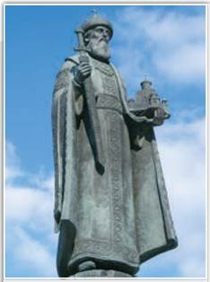
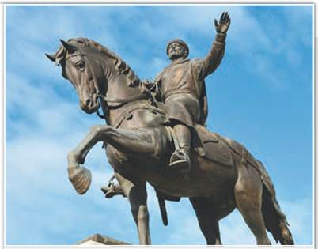
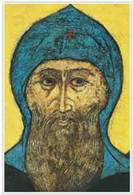
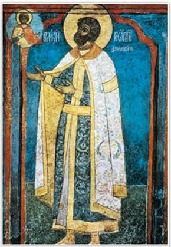
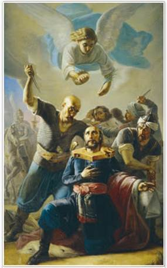

Памятник князю Даниилу Московскому. Скульпторы А. Коровин, В. Мокроусов. 1997 г. Москва

Памятник князю Михаилу Тверскому. Автор скульптурной композиции А. Ковальчук. 2008 г. Тверь
Князь Даниил изображён в богатых княжеских одеждах, в левой руке он держит модель храма, а в правой — меч. Поднятая рука князя Михаила символизирует приветствие и благословление жителей Твери.
РОССИЯ
МИР
1. Предпосылки и особенности объединения Северо-Восточной Руси. Объединение Северо-Восточной Руси было необходимо для освобождения русских земель от ордынского владычества.
В Западной Европе при образовании единых централизованных государств, например Франции или Англии, внешняя угроза не играла первостепенной роли. К объединению побуждали внутренние предпосылки — хозяйственная специализация различных земель, развитие торговых связей между ними, рост городов как торгово-ремесленных центров. В отличие от Западной Европы в Северо-Восточной Руси господствовало натуральное хозяйство, а города были больше военно-административными центрами. Правда, к началу XIV в. наблюдалось восстановление земледелия и ремёсел после карательных походов Орды в конце XIII в. Постепенно оживлялась местная торговля.
В возвышении русских княжеств большую роль играло умение великих князей строить отношения с ханами Орды, а также успехи в междоусобных конфликтах внутри Руси. В Сарае зорко следили и за Литовской Русью, и за своим «Русским улусом».
Ханы старались поддерживать равновесие сил между великими и удельными князьями. К примеру, в великом княжении Владимирском они сдерживали возвышение власти великого князя, но и удельным князьям не позволяли стать независимыми.
Политика Орды не препятствовала дальнейшему дроблению Руси, но в то же время спасала от неразберихи, помогала сохранять некоторое единство внутри Владимирского княжения, Рязанского и Смоленского княжеств. Новгород тяготел к Владимирской Руси и из своих интересов всегда поддерживал князей удельных против великих.
В борьбе за ярлык князья опирались на разные силы, сложившиеся в Орде в 1280—1290-е гг. Это были ханы, сидевшие в столице Орды Сарае, и Ногай, который фактически самостоятельно правил в западной части Орды — от Днепра до Дуная. Одни русские князья платили дань в Сарай, другие — Ногаю.
Временем больших несчастий стало соперничество за ярлык на великое княжение Владимирское сыновей Александра Невского — Дмитрия Переяславского и Андрея Городецкого. Каждый из братьев шёл на сговор с той или иной группировкой, сложившейся в Орде.
СВИДЕТЕЛЬСТВО ЭПОХИ
Из Новгородской летописи
В лето... 1293 бил челом Андрей князь царю с иными князьями на Дмитрия князя с жалобами, и отпустил царь брата своего Дюденя с большой ратью на Дмитрия. О, много пакости было христианам, безвинные города взяли: Владимир, Москву, Дмитров, Волок и иные [всего 14], опустошили всю землю. А Дмитрий в Псков бежал. Новгородцы же с Семёном Климовичем дары послали Дюдени, чтобы не ходил к ним с Волока, а Андрея призвали в князья. Андрей князь рать возвратил, а сам поехал в Новгород и сел на его столе...
В 1293 г. из Сарая хан Тохта послал на князя Дмитрия рать своего брата Тудана (Дюденя). Карательный поход Дюденевой рати на Русь, разграбившей 14 русских городов, летописцы назвали «вторым Батыевым нашествием». Дюденева рать разорила земли, платившие дань Ногаю.
Андрей Городецкий был великим князем владимирским в 1294—1304 гг. Дмитрий Переяславский отправился в свой удел, но умер по дороге в Твери в 1294 г. Со времён Дмитрия и Андрея Александровичей великие князья не жили во Владимире. Столицей Владимирской Руси становился центр того удела, князь которого владел великокняжеским ярлыком.
2. Укрепление позиций Твери и Москвы. В начале XIV в. развернулась борьба между Тверью и Москвой за роль центра объединения земель великого княжения Владимирского. Оба города в домонгольские времена ничем не выделялись. Но ослабление Владимира, Суздаля, Ростова, разоряемых баскаками и карательными ратями Орды, ситуацию изменило. Люди уходили на новые места. Младшие города — Переяславль-Залесский, Городец-на-Волге, Нижний Новгород, Тверь, Москва — росли и укреплялись. Густые леса в какой-то мере защищали их от нападений монголов. Здесь появлялись новые вотчины бояр и поместья, которые князья давали своим воинам на время службы.
Понятие «дружина» стало уходить в прошлое. Рядовых княжеских воинов чаще называли «слуги вольные», а позже — служилые люди. Бояре и слуги вольные могли переходить от одного князя к другому. При этом их вотчины и поместья во владениях прежнего князя терялись. Боярам мелких уделов становилось тесно в границах небольших княжеств. Покупать земли за пределами своего удела по княжескому ряду (договору) они не могли. Поэтому бояре желали служить князю, у которого земель было больше, или тому, кто стремился увеличить размеры своего удела.

Князь Даниил Александрович. Фреска Архангельского собора Московского Кремля
Города, основанные на речных торговых путях, богатели. К примеру, Москва соединялась с Волгой через Москву-реку и Оку, а Тверь стояла на Волжском торговом пути. В 1247 г. Тверь была дана в удел брату Александра Невского Ярославу Ярославичу. Первым московским удельным князем стал младший сын Александра Невского Даниил Александрович (1276—1303).
В 1304 г. в соответствии с родовым старшинством ярлык на великое княжение получил Михайл Ярославич Тверской (1282—1313). Михаил приходился двоюродным дядей удельному князю московскому
Юрию Даниловичу. В будущем московские князья будут отставать по родовому старшинству от тверских. Основатель московской династии Даниил Александрович умер в 1303 г., так и не став великим князем. По очередному (лествичному) порядку престолонаследия московские князья не могли претендовать на владимирский стол, что их, конечно, не устраивало.
В начале XIV в. тверские князья часто владели ярлыком на великое княжение в соответствии с «очередью» и ханской волей. Они ни разу не призывали обрушить ордынское владычество. Однако династические связи тверских князей с Гедиминовичами, врагами Орды, заставили ханов смотреть на Тверь с подозрением.
Князья московские тоже стремились обладать ярлыком на великое княжение. Таковыми были сыновья Даниила Александровича Московского — Юрий и Иван I Калита, дети Калиты — Симеон Гордый и Иван II Красный (Красивый). В XIV в. все русские князья возили подарки в Сарай для хана, его жён и домочадцев, а также для мурз (монгольской знати).
3. Соперничество Москвы и Твери. Противостояние Москвы и Твери вызывало внутри Владимирской Руси междоусобные войны. В них были втянуты Орда, Новгород и Великое княжество Литовское. В 1300 г. князь Даниил Московский отвоевал у Рязани Коломну, затем получил по наследству Переяславское княжество и таким образом удвоил территорию своего удела. Военная мощь и ресурсы Московского княжества выросли. Кроме того, на службу к Даниилу переходили бояре и слуги вольные из разных земель. В 1303 г. старший сын Даниила Юрий (1303—1325) отнял у Смоленского княжества Можайск.

Князь Юрий Данилович. Фреска. 1342 г.
Будучи в Орде, Юрий Данилович сумел так расположить к себе хана Узбека, что тот отдал ему в жёны свою сестру Кончаку (1317) и разрешил ей принять православие. С ярлыком на великое княжение, женой Кончакой (Агафьей), ордынским послом и в сопровождении ордынского отряда Юрий вернулся на Русь.
Михаил Тверской сложил с себя великое княжение. Юрий решил, что пришло время для взятия Твери. В 1317 г. у села Бортенево состоялось сражение. Однако войско Юрия и его союзников потерпело поражение. Агафья оказалась в тверском плену и там умерла. Юрий с ордынским послом явился в Сарай с жалобой: московскую княгиню в Твери уморили.
ТОЧКА ЗРЕНИЯ
Из книги историка М. Любавского
«Обзор истории русской колонизации с древнейших времён и до XX века»
С присоединением Коломны, Переяславля и Можайска Московское княжество не только округлило свою первоначальную территорию, включив в неё весь бассейн реки Москвы и её притоков, не только достигло некоторых естественных границ на юге (р. Ока) и западе (полоса крупных лесов по водоразделу рек системы Волги и Днепра), но и значительно расширило эту территорию в юго-западном направлении и северо-восточном. Вместе с тем Московское княжество стало самым крупным и самым населённым из всех княжеств Суздальской земли.

Смерть Михаила Тверского. Художник П. Орлов. 1847 г.
Михаила вызвали в Орду, и в 1318 г. по приказу хана Узбека он был убит. Ярлык некоторое время оставался у Юрия Даниловича, но в 1322 г. хан передал его сыну казнённого тверского князя — Дмитрию Михайловичу Грозные Очи (1322—1326). Прозвище князь получил говорящее: в 1325 г. в Орде он убил московского князя Юрия Даниловича, отомстив за смерть отца.
Самоуправство тверского князя «без ханского приказа» возмутило Узбека. Он приказал казнить Дмитрия Грозные Очи, а ярлык отдал его брату Александру Михайловичу Тверскому (1326—1327).
ПОДВЕДЁМ ИТОГИ
Выдача ярлыков на великое княжение в Северо-Восточной Руси зависела от воли ордынских ханов и часто происходила в нарушение очередного порядка престолонаследия. В случае отказа выплаты дани ханы отправляли на Русь карательные отряды. Главными претендентами на великокняжеский ярлык стали князья Твери и Москвы. Сначала преимущество было на стороне Твери. Но московские князья, успешно расширявшие свою территорию, добились в Орде признания своих притязаний на ярлык.
Вопросы и задания
Работаем с хронологией
Расположите в хронологической последовательности события:
Работаем с источником
Прочитайте отрывок из труда историка В. Ключевского «Русская история» и ответьте на вопросы.
Москва и возникла в средине пространства, на котором сосредоточивалось тогда наиболее густое русское население... Это центральное положение Москвы прикрывало её со всех сторон от внешних врагов; внешние удары падали на соседние княжества — Рязанское, Нижегородское, Ростовское, Ярославское, Смоленское — и очень редко достигали до Москвы. Благодаря такому прикрытию Московская область стала убежищем для окрайного русского населения, всюду страдавшего от внешних нападений.
Работаем с понятиями
Кто такие служилые люди? Как менялось положение служилых людей и боярства в XIII—XIV вв.?
ДОПОЛНИТЕЛЬНЫЕ МАТЕРИАЛЫ
«УЧИТЕЛЮ И УЧЕНИКУ».
Материалы к параграфу на портале «История.РФ».